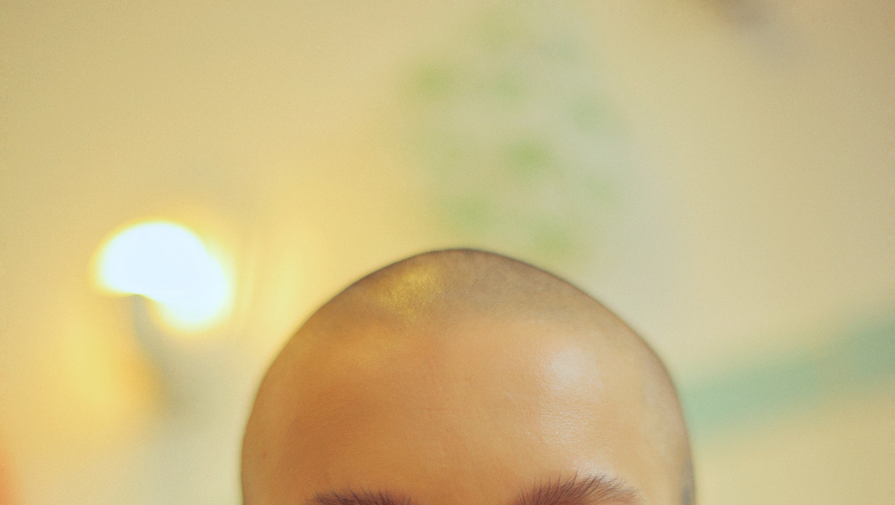
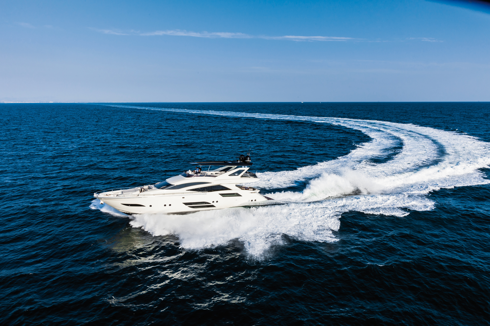
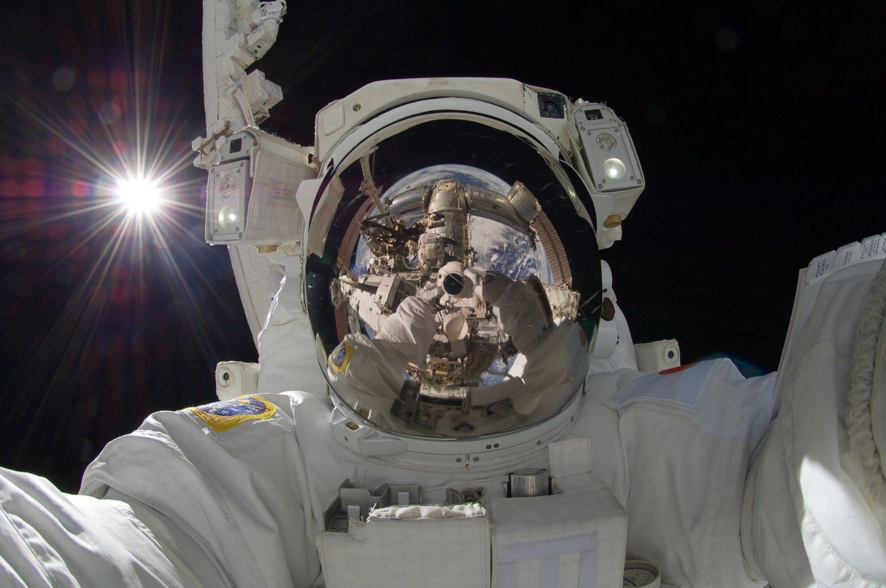

죽기 전에 꼭 하고 싶은 10가지
Hobby | Buckit List | Favorite things | Recommend | Like-Human|  |
Buckit No.1 삭발하기
항상 허리까지 오고 어딜 가든 머리 길다는 얘기를 들었던 내 머리 다 밀기! #대머리 #민머리 #삭발 #스님아님 |
|
Buckit No.2 세계일주하기
그냥 땅만 찔끔 밟고 오는 거 말고 밥도 먹고 며칠 자고 유명 장소도 가고... #세계일주 #돈이얼마야 #자유 |
 |
|
 |
Buckit No.3 결혼하기
연예인을 좋아하면서 눈이 굉장히 높아진 나 #결혼 #얼빠 #잘생긴남자 #구해요 |
|
Buckit No.4 전투기 타보기
원래 꿈이 공군 중에서도 여객기 말고 전투기 조종사였던 만큼 #공군 #탑건 #중력 #하늘 #구름 #날다 |
 |
|
Buckit No.5 실컷 욕해보기
아무래도 인간은 사회생활을 하는 동물이다 보니(정말 별로임) #가면 #페르소나 #불평불만 |
||
Buckit No.6 요트 사기
바다를 안 좋아하는 사람이 어디 있겠냐마는 바다가 너무 좋아서 #바다 #파도 #짙은 #어두운 #개인요트 |
 | |
 |
Buckit No.7 다중 국적 취득하기
최대한 많은 나라의 언어를 배우고 국적도 여러개를 취득해 보고 싶다 #국적 #대한민국 #미국 #캐나다 #영어 #외국인남편 |
|
Buckit No.8 아우토반 질주하기
호주에 있는 속도 제한이 없는 거리를 말하는데 300km가 넘는 속도로도 달린다고 한다. #질주 #nct127 #좋은차 #페라리 #사주세요 |
||
Buckit No.9 스카이다이빙하기
바다 말고도 평소에 하늘을 보며 구름이 움직이는 걸 관찰하는데 #새 #용기 #하늘을날다 #낙하산 |
||
Buckit No.10 우주관광하기
조용한 것을 좋아해서 웬만한 사람들이 좋아하는 노래 듣는 것도 안 좋아하는 나 #지구 #우주 #먼지 #고요 #암흑 |
 | |